UX/UI Design for Pre-MVP Platform
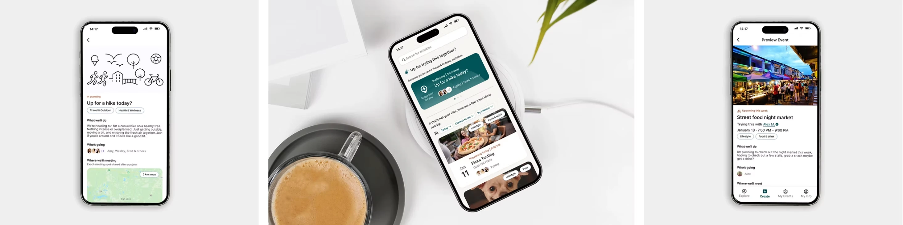
Unveil — Social Connection Platform
Unveil Lab is an early-stage startup building a mobile-first social connection platform designed to help people discover new experiences and form meaningful connections in real life. Unlike traditional social or dating apps, Unveil focuses on group activities and shared interests that encourage users to try new things, meet new people, and build community. In this project, I collaborated with two other UX/UI designers to design a seamless, trust-centered mobile experience that supports spontaneous, real-world connections.
Background
The Problem
Many adults want deeper social connections through shared, real-world experiences. However, planning effort, safety concerns, and social pressure from dating apps and event platforms often get in the way. Existing solutions rely heavily on profiles, advance scheduling, and endless browsing, which can lead to decision fatigue and inaction. This creates an opportunity to design an experience-first, small-group, real-time matching model that reduces friction and prioritizes trust, making spontaneous, in-person connections feel safer and more accessible.
Empathize
User Interviews
The team started the project by planning and conducting user interviews.
Research Objectives
- To understand how and why users engage in and seek social activities in their daily lives
- To explore what platforms, ways, or applications users use for social activities and understand their pain points
- To understand whether users find an activity-first approach appealing and trustworthy
- To understand expectations and criteria around meeting new people, communication before a meetup, and boundaries
Approach
We interviewed adults in their late 20s to early 40s who were new to their city or looking to expand their social circle beyond dating apps, and who had experience using platforms like Meetup, Eventbrite, and Bumble BFF to connect through shared activities.
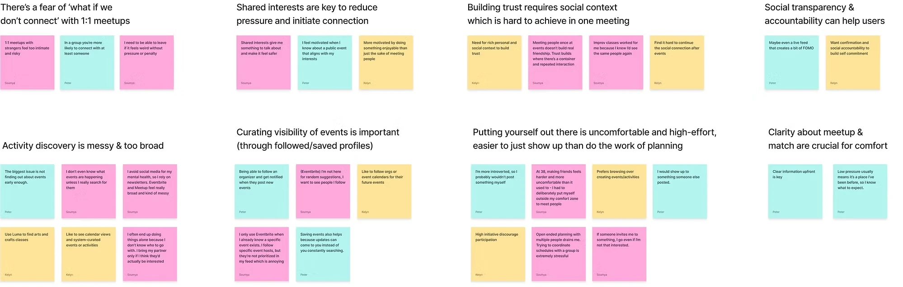
Affinity Map
View Affinity Map & Competitive AnalysisKey Findings
We synthesized insights from user interviews through affinity mapping, which revealed that adults engage more when social experiences are spontaneous, low pressure, and centered on shared activities rather than profiles or advance planning. The findings showed that small group settings feel safer and more approachable than one-on-one or large events, while heavy coordination and overwhelming discovery increase hesitation. Trust emerged as a key factor, built through clear context, flexible participation, and easy opt-out rather than rigid commitments.
- Shared activities lower social pressure Activities create a natural reason to connect without forced interaction.
- Small groups support comfort and participation A few people strike the right balance between comfort and engagement.
- Spontaneity increases commitment Experiences happening soon or nearby are easier to commit to.
- Reduced effort encourages participation Reducing self-promotion and planning removes barriers to joining.
Competitive Analysis
We conducted a competitive analysis of Nextdoor, Sonaara, Bumble BFF, Meetup, Eventbrite, and Partiful to evaluate how existing platforms support social connection, discovery, and community building.
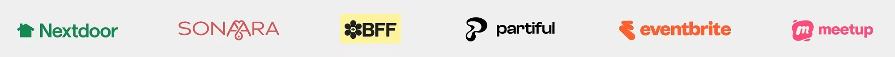
Opportunity: The competitive analysis revealed that most platforms focus on planned events, large communities, or one-to-one matching, which introduces friction and social pressure. This created an opportunity to design for spontaneous, small-group experiences that reduce planning effort and make real-world social connection easier to act on.
Define
User Personas
We created two user personas to ground design decisions in real user needs and behaviors around social connection. Alex, the primary persona, values spontaneity and shared experiences but is frustrated by slow, planning-heavy platforms, while the secondary persona (Dannie) reinforced the need for small-group, low-pressure interactions. Together, the personas shaped Unveil's focus on experience-first discovery, minimal coordination, and flexible participation.
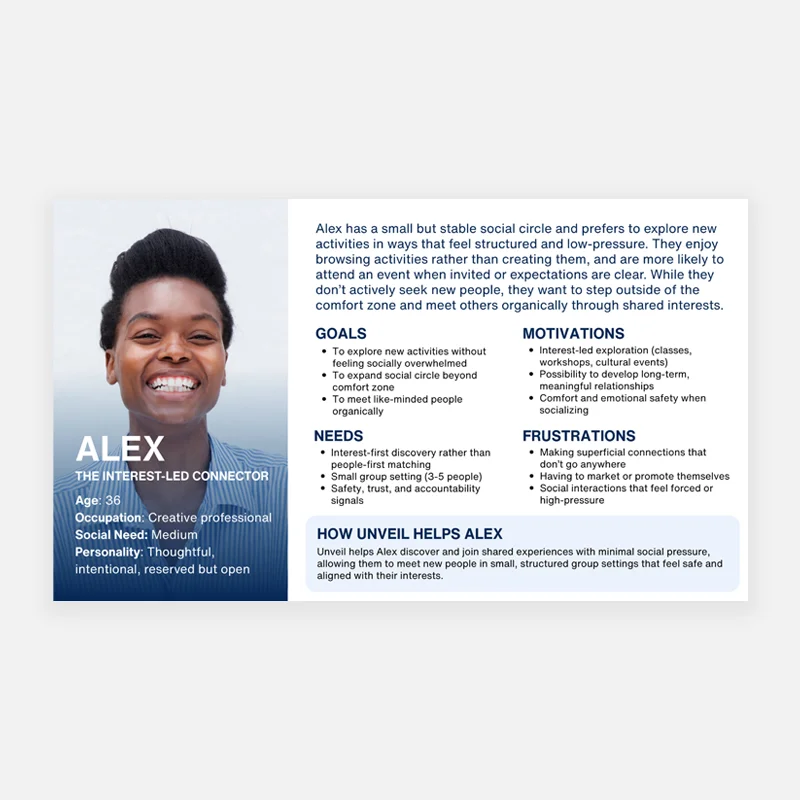
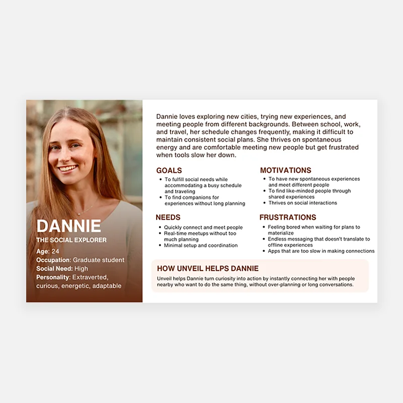
Problem Statement
Most adults, especially young professionals, recent immigrants, and students, seek low-pressure yet meaningful social connections through real-world experiences. However, existing social platforms rely on profile-based matching and long planning cycles, making social connections feel high-pressure, complicated, and disconnected from action. Users need an activity-first, on-demand experience that allows them to choose what they want to do and when they want to do it, while exploring new connections within small-group settings that reduce social pressure and increase trust and follow-through.
Ideate
Project Goal & Sitemap
Project Goal
The goal of this project was to design a mobile-first social experience that brings Unveil's mission to life by making it easy for people to discover and join shared activities nearby, in the moment. The team aimed to create an intuitive, trustworthy, and inclusive experience that supports spontaneous connection through clear user flows, thoughtful safety cues, and low-pressure interaction. The final outcome is a clickable, high-fidelity prototype that demonstrates how Unveil can turn digital discovery into meaningful real-world experiences rooted in spontaneity, belonging, and connection.
Sitemap
We designed the sitemap to center discovery around experiences rather than profiles, enabling users to quickly explore, join, or start low-pressure activities while maintaining continuity through activity-based chats and past participation.
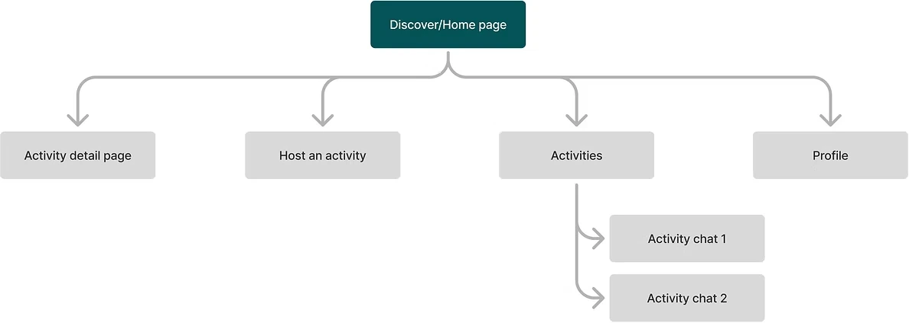
MVP Definition
Based on user interviews, competitive analysis, persona insights, and discussions with the Unveil founder, we defined a focused MVP that addresses key pain points around spontaneous, low-pressure social connection. To support this goal, the MVP focused on a small set of core capabilities that reduce friction, encourage spontaneity, and build trust from the first interaction.
User Flows
The next step was to design user flows that reduce social friction by prioritizing experience-first discovery, minimal planning, and small-group participation. Onboarding establishes trust and intent without heavy self-promotion, while joining or starting an activity focuses on clarity, speed, and low-pressure decision-making to support spontaneous, real-world connection.
- Account Setup & Onboarding The onboarding flow establishes trust and intent through lightweight profile setup, identity verification, and interest selection, then quickly routes users to the Discover/Home page.
- Start / Host an Activity Users can start an experience by defining a simple activity, time window, location, category, and group size, previewing it before making it visible to others.
- Join an Activity Users browse or filter activities by intent (activity type, time, group size, distance), review activity details and group context, then join with a single action.
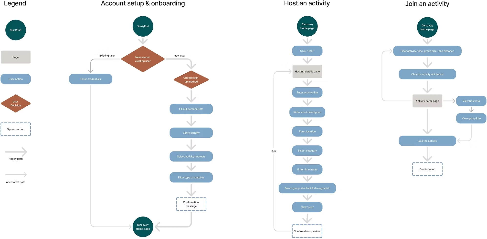
Design
Mid-Fidelity Wireframes
After finalizing the user flows, we created mid-fidelity wireframes to validate layout, content hierarchy, and key interactions before moving into visual refinement. This step helped ensure the experience remained clear, low-friction, and aligned with Unveil's activity-first principles.
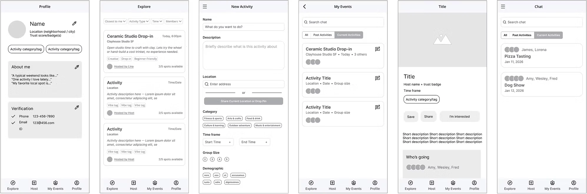
Prototype
High-Fidelity Prototype
With the core structure confirmed through revisions of the mid-fidelity prototype across onboarding, discovery, and participation, we moved confidently into high-fidelity prototyping to refine visual design, interaction details, and overall experience quality before usability testing.
Key Screens
- Account setup and onboarding The experience was designed as a lightweight flow focused on building trust with minimal friction.
- Browse and join a hangout Screens designed to help users quickly discover nearby activities and decide whether to join with confidence.
- Start a new hangout This flow makes it easy to create an activity with minimal effort.
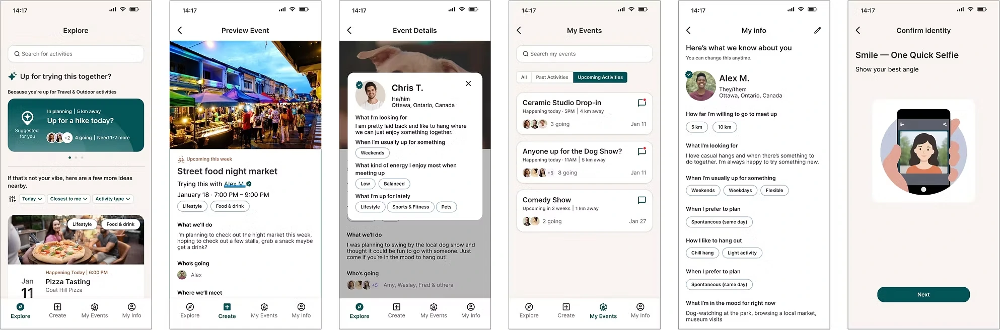
Visual Identity
We developed Unveil's visual identity to feel calm, welcoming, and human, reinforcing an experience-first approach to spontaneous social connection. The design prioritizes clarity, low cognitive load, and supportive language, while quietly embedding trust cues.
Brand Guidelines
For Unveil's brand guidelines, we chose a deep, muted teal to establish a calm, trustworthy, and quietly premium foundation, paired with Inter for its friendly, neutral, and highly readable UI performance. Warm off-white backgrounds create openness and softness, while terracotta accents add subtle warmth and energy. We also created a set of custom AI-generated illustrations to support the onboarding experience, helping make early interactions feel more welcoming and human. Together, the palette, typography, and imagery support an experience-first product that feels intentional, inviting, and emotionally safe.
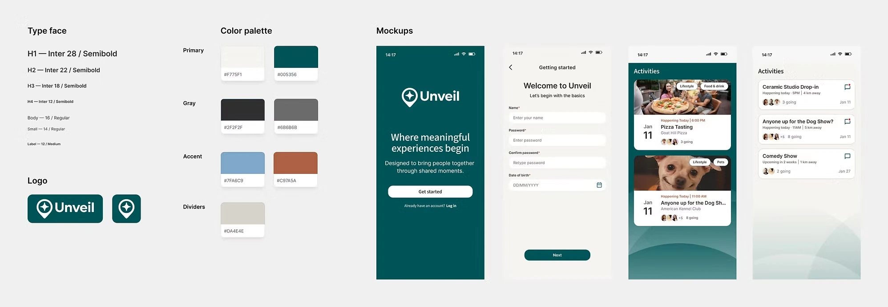
Brand Guidelines
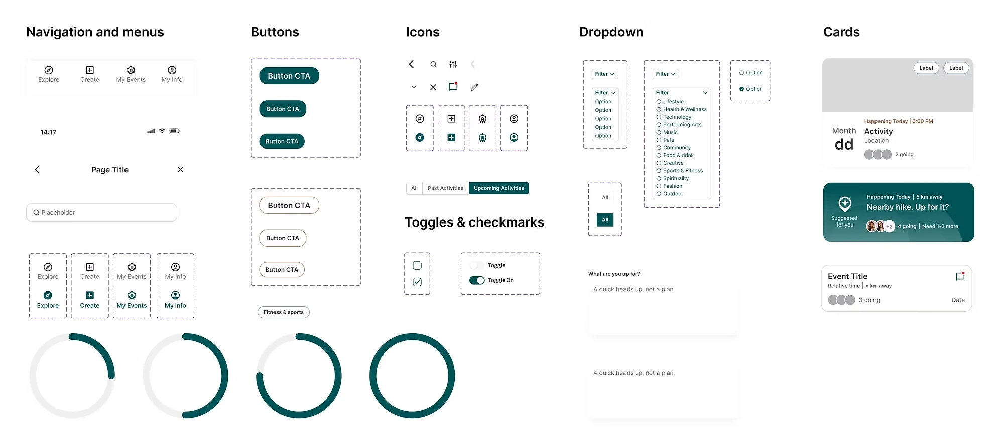
UI Component Library
UI Component Library
Next, we built a component library to ensure visual consistency, scalability, and efficient iteration across key screens, while keeping the interface flexible and easy to evolve as the product grows.
Usability Test
Test Goals & Objectives
We ran usability testing to evaluate whether users could confidently complete the core actions that lead to a first real-world social connection on Unveil, while maintaining a low-pressure and trustworthy experience. Testing focused on onboarding, browsing and joining activities, and creating new activities using a high-fidelity interactive prototype to assess clarity, confidence, and ease of participation.
Objectives
- Measure whether users can complete key tasks without external help
- Identify errors, hesitation, or points of confusion during core flows
- Evaluate perceived usefulness and relevance of features
- Assess user confidence when browsing, joining, and creating activities
- Understand whether users feel safe and comfortable saying yes to an activity
- Validate that language conveys a low-pressure, spontaneous experience
Method
- Format: Prototype walkthrough (moderated via Zoom recording).
- Participants: Three users (adults in their late 20s to early 40s seeking new social connections).
- Tasks: Three sequential flows — (1) Complete onboarding process, (2) Browse and join a hangout, and (3) Start a new hangout.
- Metrics: Task success, errors, perceived usefulness, confidence, safety, and whether the language effectively communicated Unveil's low-pressure, spontaneous intent.
- Test Tools: Figma prototype with three functional flows.
Usability Summary
Overall, participants feel confident completing browsing, joining, and creating activities with little hesitation, suggesting that the core functions and interaction flows are intuitive and approachable. Feedback highlighted opportunities to refine language, clarify timing, and adjust safety signals.
Design Iterations
- 1. We increased contrast on the "Because you're up for…" label to improve visibility. To reduce confusion around timing, we updated suggested activity cards to clearly indicate when an activity is still in planning and revised the copy to feel more immediate (for example, "Up for a hike today?"). We also added specific times to user-created activity cards to support faster, more confident decision-making.
- 2. We renamed "Group comfort level" to "Group size" to make the selection more immediately understandable. We also changed "Save and improve matches" to "Preview profile" to better reflect the action users are taking and reduce ambiguity during onboarding. In addition, we added helper text to clarify several other onboarding questions.
- 3. Several small copy updates were made to address confusing or vague labels, helping reduce hesitation and improve overall clarity throughout the experience, and a date-of-birth selector icon was added to improve affordance and usability.
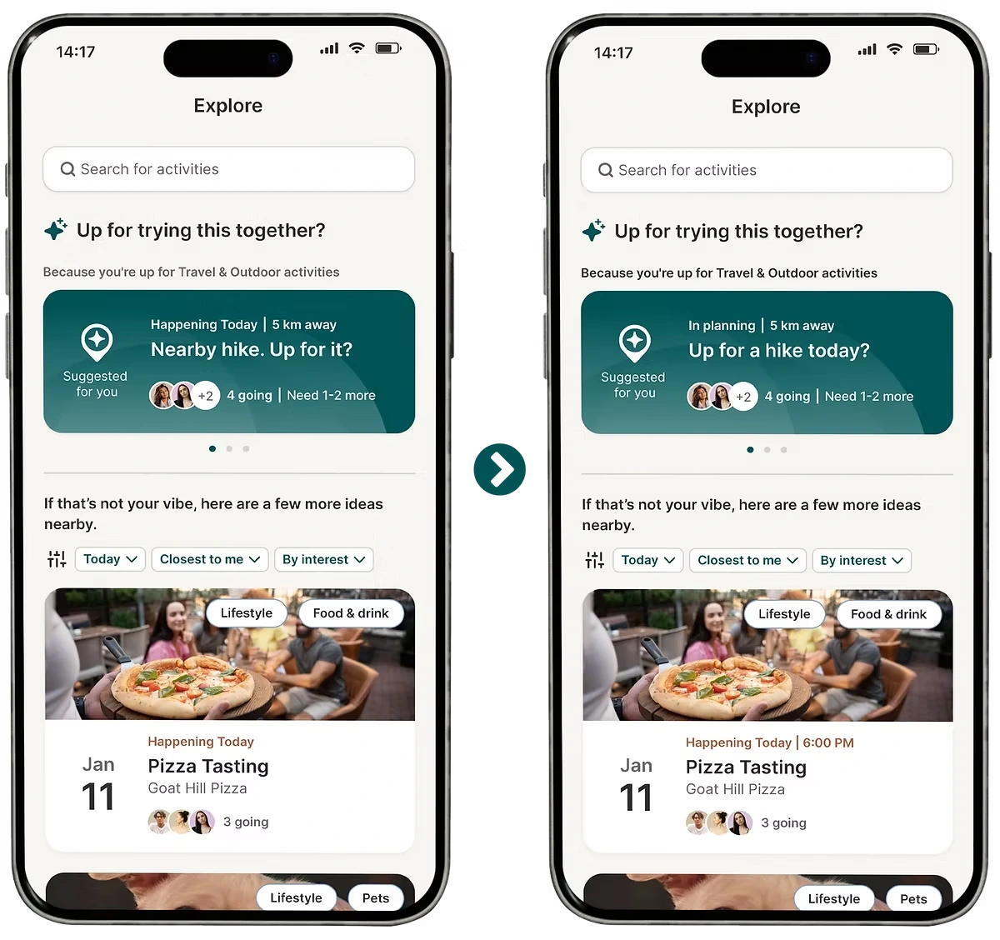
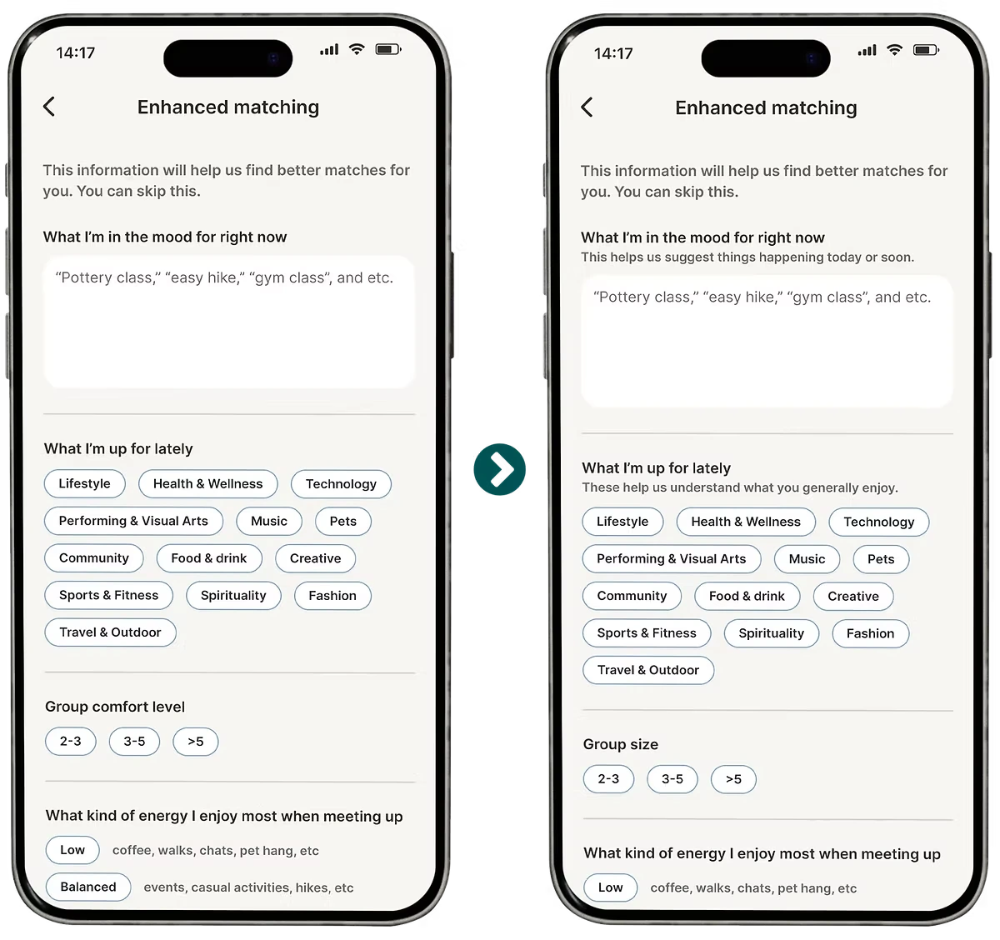
Final Design
Selected Screens
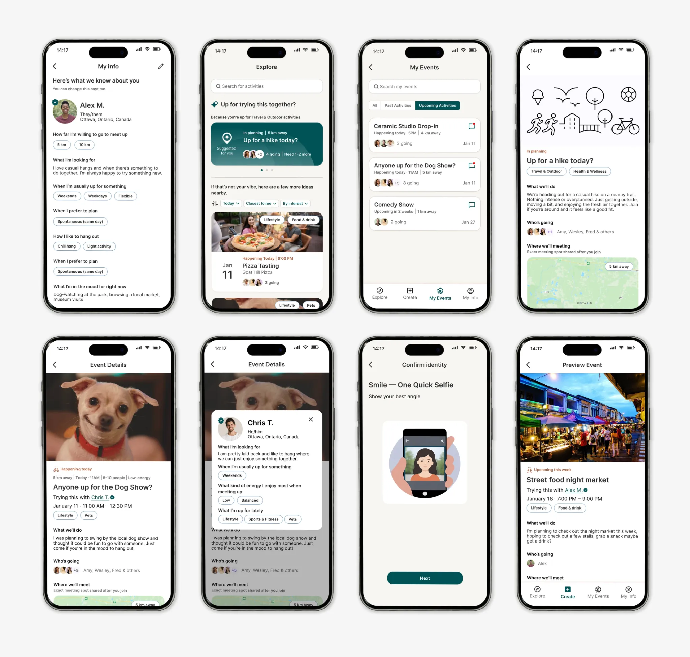
Explore the full interactive prototype in Figma
View Prototype →Conclusion
What I Learned
This project reinforced the value of grounding design decisions in research while moving quickly and collaboratively. Working within a five-week timeline and a limited 20-hour weekly scope required strong prioritization, clear communication, and a willingness to iterate based on evidence rather than assumptions. Collaborating with a data-driven UX team and a highly creative, feedback-oriented client sharpened my ability to translate qualitative insights into focused product decisions and validated how small details in language, timing, and trust cues can significantly impact user confidence and follow-through.
"My experience working with the UI/UX team over the past weeks has been truly remarkable. They delivered far beyond my expectations, not only in terms of volume of work, but in the depth, quality, and intentionality behind every design decision… The team demonstrated a strong grasp of Unveil's brand and vision, consistently refining the work with each iteration. They balanced openness to feedback with confidence in their expertise, communicated clearly, and remained deeply committed to delivering the best possible experience. This work has laid a strong foundation for Unveil's next phase, and I would highly recommend them for future UI/UX projects."
— Jonelle Allen, Founder, Unveil Labs